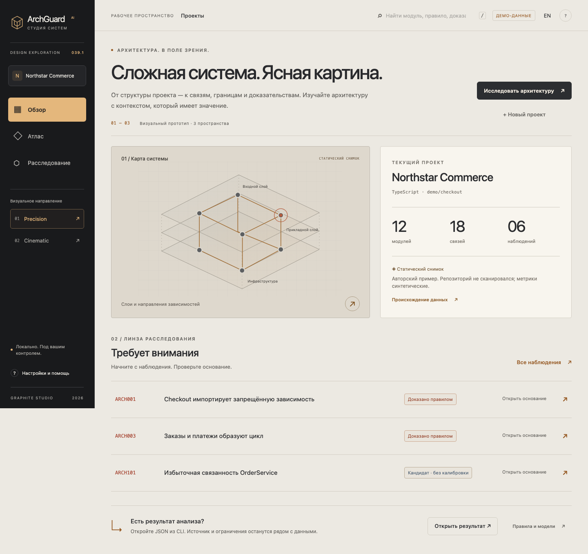
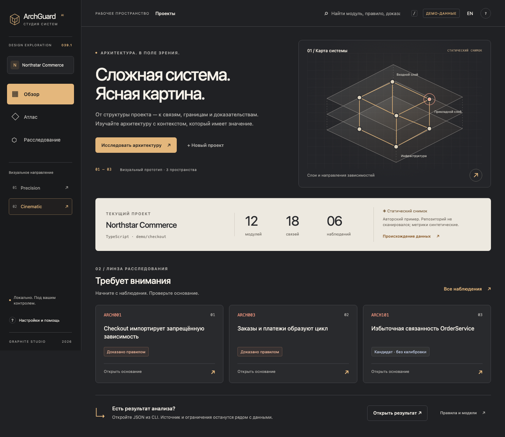
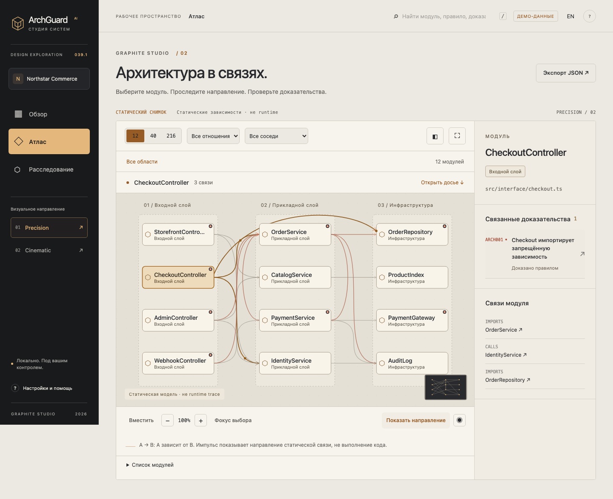
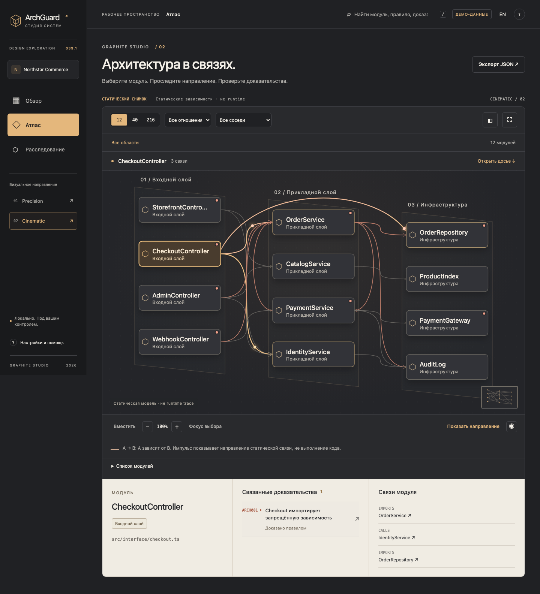
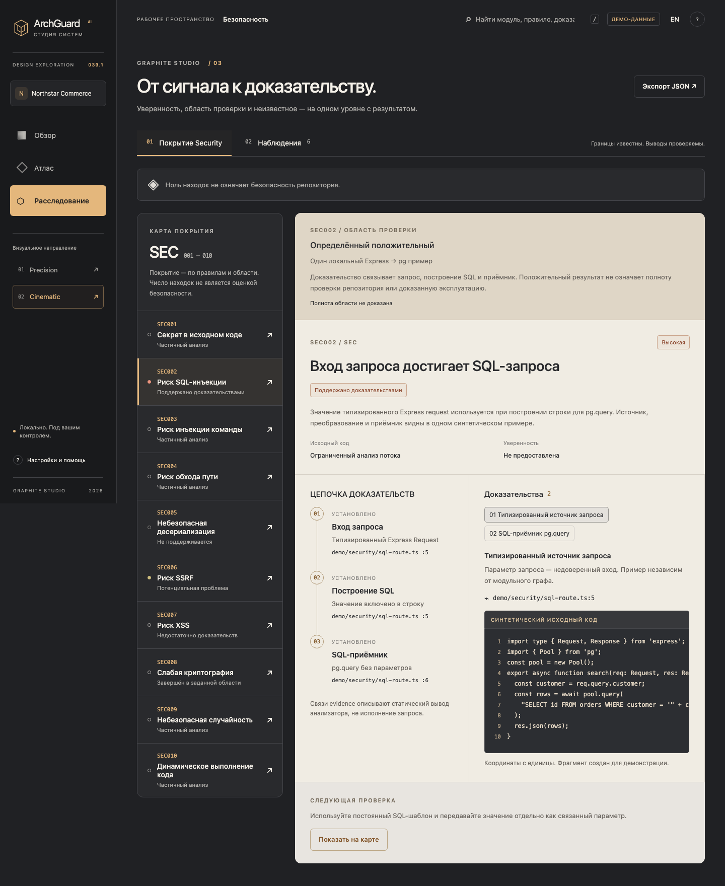

01 / PRECISIONОткрыть прототип ↗

Ясность как система.
Светлая плоскость, строгая сетка, компактный реестр. Ортогональный Атлас и постоянный боковой инспектор для внимательной работы.
Сразу в Атлас →Интерактивный обзор, Architecture Atlas и расследование Security / Findings. Оба варианта работают на одной модели данных P039, сохраняют RU/EN и честные границы выводов.
Широкий Атлас, выразительные направления связей и светлые области evidence создают более самостоятельный образ продукта.

Светлая плоскость, строгая сетка, компактный реестр. Ортогональный Атлас и постоянный боковой инспектор для внимательной работы.
Сразу в Атлас →
Просторная графитовая сцена, смещённые плоскости графа и досье под картой. Trace и исходный код читаются рядом.
Сразу в Атлас →Запись настоящего браузера: узлы, фокус, направленные импульсы, 216 модулей и неизвестные звенья evidence. Статические зависимости, не runtime execution.


Область проверки, статус и неизвестное сохранены. Поддержанная находка не означает безопасность всего репозитория.
Открыть расследование ↗
Мобильная навигация, читаемый масштаб, список модулей и полноразмерное досье.